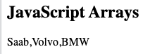
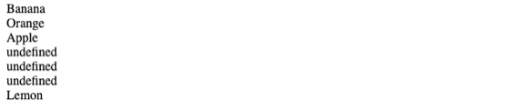
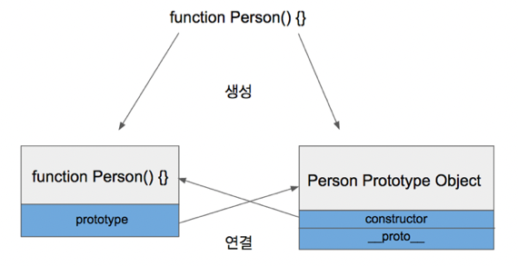
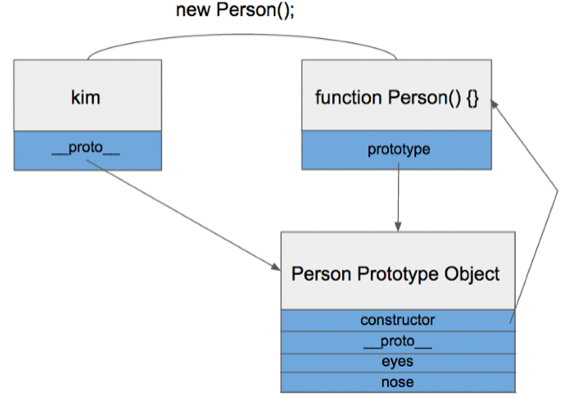
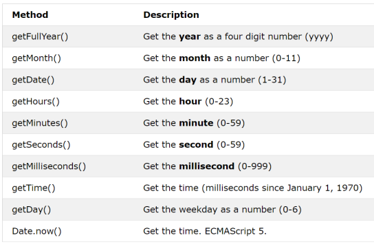

충남대학교 컴퓨터공학과 이규철 교수님의 "웹 프로그래밍" 강의를 필기한 내용입니다.
다소 잘못된 내용과 구어적 표현 이 포함되어 있을 수 있습니다.
본 문서는
작성자의 귀찮음때문에 참고 문서 링크들로 범벅되어 있습니다.
Array 몰랐던점
배열 순회
const arr = [1, 2, 3];
for(const el of arr) {
console.log(el);
}- 뒤에 가서 또 나오겠지만 배열의 순회에는 for-of를 써야 하고 객체의 순회에는 for-in을 써야 한다 - 순서가 중요한 경우에는 for-in을, 순서가 중요하지 않은 경우에는 for-of를 사용해라
배열의 출력

- innerHTML에 배열을 넣으면 위처럼 나온다
배열 인덱스로 값 넣기
const fruits = ["Banana", "Orange", "Apple"];
fruits[6] = "Lemon";- 위 코드를 실행시키면

OutOfBounds에러가 나는게 아니고 위처럼 저장된다
Array() 생성자의 인자
new Array(10, 20);은 배열에 10과 20을 넣어주지만new Array(40);은 크기가 40짜리인 배열을 만든다
삽입과 삭제
Array.shift()는.pop_front()와 같은거고Array.unshift(el)은.push_front(el)와 같은거임delete는 원소를 지우긴 하지만 그자리를undefined로 만들어버린댄다Array.splice()는 주어진 인덱스에서 주어진 갯수만큼 원소를 지우고 주어진 원소들로 다시 채운 후 반환하는 메소드임
정렬 예시
- 알파벳순으로 정렬 예시
- 숫자 크기대로 오름차순 정렬 예시
- 숫자 크기대로 내림차순 정렬 예시
- 랜덤한 순서대로 정렬 예시
- 배열에서 최대값 찾기 예시
- 배열에서 최솟값 찾기 예시
- 배열 뒤집기: Array.reverse(): void
순회 예시
- Array.reduce()
- Array.reduceRight()
- 모든 원소 테스트하기: Array.every()
- 어떤 원소 테스트하기: Array.some()
- 원소 찾기: Array.indexOf()
- 마지막 원소 찾기: Array.lastIndexOf()
- 원소가 존재하는지 확인: Array.includes()
- 조건을 만족하는 첫번째 원소 찾기: Array.find()
- 조건을 만족하는 첫번째 원소의 인덱스 찾기: Array.findIndex()
- Iterable로부터 배열 만들기: Array.from()
- 인덱스만 모아 배열로 만들기: Array.keys()
Object
Object Literal
- 자바스크립트는 보통의 다른언어와 다르게 객체 리터럴(Object Literal) 이 존재한다.
{
id: 1234,
name: "holymoly",
age: 24,
}- 위와 같은 구조를 Object Literal 이라고 하는데
- 뭐 많이 써봤으니까 익숙하긴 할거임
- 근데 여기서 중요한 것은 Object Literal 과 ES6에서부터 지원하는 class 키워드, 그리고 function + prototype 을 이용한 객체의 생성은 별개의 것이 아니라는 것을 아는 것이다
- 즉, 문자열을
const str = new String()를 이용해 만들 수도 있지만const str = ""처럼 Literal을 이용해 만들 수 있듯이 - 객체도
new를 이용해 만들 수도 있고{}를 이용해 만들 수도 있는 것이다
Prototype의 이해
- 자바스크립트는 Prototype Design Pattern 을 이용하는 대표적인 언어다
- ES6부터는
class키워드를 지원해 객체를 만들 수 있는 또다른 방법이 생겼지만 - 결국에는
class키워드는 이전의prototype을 이용한 객체의 생성방식을 문법과 제약조건만 좀 바꾼 Syntactic Sugar 의 일종이지 작동방식은prototype을 여전히 사용하게 된다 - 일단 다른 언어와 자바스크립트의 객체 생성 방식을 좀 더 살펴보면
- 자바같은 언어는 객체를
new키워드를 이용해 생성하면 생성자가 클래스를 바탕으로 객체를 생성해서 준다 - 하지만 이러한 방식은 객체를 생성하는데 꽤나 많은 자원이 필요하기 때문에 자바스크립트는 Prototype 이라는 것을 이용한다
- 그래서 이게 뭐냐면
- 생성자를 정의하면 생성자 뿐만 아니라 객체의 원형 - 이게 Prototype 이다 - 도 생성하고
new를 이용해 객체를 생성하면 밑바닥부터 만드는게 아니고 Prototype 객체를 복사해서 주는 방식이다 - 뭐 요즘은 컴퓨터가 다 빨라서 체감도 잘 안되고 진짜 그런진 모르겠는데 이게 더 빠르다네
- 그럼 이 생성자는 으케만드는가
function키워드를 이용해 함수를 정의하면 이놈이 생성자의 권한을 갖게 된다- 뭐 ES6에 와서는 arrow function을 지원하면서 진짜 함수같은 함수가 생겼지만 그냥 함수랑 생성자 권한을 가진 함수랑 좀 분리를 시켜놓던지 왜 이렇게 했는지는 알 방법이 없음
function안에서this키워드를 쓸 수 있는 이유가 바로 이거때문
- 그럼 정리해보면
function을 이용해 함수를 정의하면 이놈이 생성자의 권한을 부여받고 동시에prototype객체가 생성되어 어딘가에 저장되게 된다- 그리고
new키워드를 이용해 객체를 생성하면 저장해놓은prototype을 복사한 다음 property들을 세팅해서 반환하는 구조인 셈이다
- 그럼 이
prototype에는 어떻게 접근하는가 - 모든
function에는.prototype이라는 property가 존재해 이것을 이용해prototype을 수정할 수 있다 - 따라서 아래의 코드는
function Person() {}
console.log(Person.prototype);- 결과가 다음과 같이 나온다 (크롬 기준)
Object { constructor: f Person(), [[Prototype]] }- 그리고
.prototype에 보면constructor()라는 함수가 있다는 것을 알 수 있는데 - 이놈이 아까 선언한 생성자를 가리키게 된다

- 따라서 위와 같은 구조가 된다
- 함수에는 prototype property 가 있어서 property 를 참조할 수 있고 property 에는 constructor 가 있어서 다시 원래 함수를 가리키게 되는 원형적이라고 할 수 있는 방식이다
- 그리고 저기 보면
__proto__라는 놈이 있는데 이놈은 생성자를 이용해 생성된 객체에 포함되어 원본 prototype을 참조할 수 있게 해주는 것이다

- 즉, 이렇게 된다 이거임
- 복사되는 원본객체를 Prototype Object라 하고 생성된 객체에 있는
__proto__를 Prototype Link 라 하며 Prototype Object 와 Prototype Link 를 합쳐서 Prototype 라고 용어를 사용하더라
생성자 선언 종합
- 객체가 생성될때 복사되길 원하는 것들을
prototype에 넣어주고 객체마다 다른 값을 가질 수 있는 property같은것들은 그냥this키워드를 이용해 정의한다
function Person(name, age) {
this.name = name;
this.age = age;
}
Person.prototype.getName = function() {
return this.name;
}
Person.prototype.getAge = function() {
return this.age;
}- 근데 주의할건 Method를 생성자 밖에서 정의할때는 arrow function을 사용하면
this키워드가 안먹기 때문에function키워드를 사용해야 된다
function Person(name, age) {
this.name = name;
this.age = age;
// 가능
Person.prototype.getAge = () => {
return this.age;
}
}
// 불가능
Person.prototype.getName = () => {
return this.name;
}- 그리고 Property를 prototype에 넣는 경우 해당 프로퍼티는 객체들마다 같은 값을 가지기 때문에 이 값을 변경할 경우 다른 객체에서도 바뀐다는 것을 꼭 기억하고있으라
멤버를 찾는 방법
- 프로토타입 방식에서 객체의 멤버에 접근할때 우선 해당 객체에 해당 멤버가 있는지 확인하고, 없으면 그놈의 프로토타입 객체에서 확인하고, 없으면 또 그놈의 프로토타입으로 거슬러 올라가는 방식으로 해당 멤버에 접근할 수 있는지 확인하게 된다
몰랐던거 정리
순회
const obj = {
aa: 1,
bb: 2,
cc: 3,
};
for(let key in obj) {
console.log(`${key}: ${obj[key]}`);
}
Object.entries(obj).forEach(([key, val]) => {
console.log(`${key}: ${val}`);
});- 주의할점은
- for-in구문은 순회 순서가 보장되지 않는다 - 배열에서 인덱스 0번부터 차례대로 순회한다고 보장할 수 없음 - 따라서 객체에서만 해당 구문을 써야된다
foreach가 아니고forEach라는 것Object.entries().forEach에 사용하는 함수는 배열 인자를 받도록 되어 있다 - 따라서 파라미터를 배열형식으로 구성하면 배열의 원소를 바로 받아올 수 있음
- 이외에도 Key만 순회하는
Object.prototype.keys()하고 값만 순회하는Object.prototype.values()도 있으니 필요하면 그때 찾아보자
제거
delete키워드를 사용하면 객체에서 프로퍼티를 삭제할 수 있다delete키워드를 사용해서 프로토타입에서도 지울 수 있으나 객체 전체에 영향을 미치기 때문에 신중해야 한다는 것
Getter, Setter
const obj = {
this.name = "";
get uname() {
return this.name;
},
set uname(arg) {
this.name = arg.toUpperCase();
}
};
obj.uname = "abcdef";
console.log(obj.uname);- 뭐 이렇게 getter setter 문법으로 간단하게 프로퍼티값 조회 및 변경시 추가적인 행동을 지정해 줄 수 있는 것알고있제?
Date

Boolean
- 이건 좀 알고있어라 - truthy와 falsy를 boolean으로 바꿔주는 것!!(falsy expression)
Set
- 중복 없는 자료구조
- new Set()
- Set.prototype.add()
- 뭐 순회를 위한
forEach(),values(),keys()를 지원함 entries()도 있는데 Set의 경우에는 Key가 없기 때문에[value, value]형태로 반환한댄다
Map
- Key Value 쌍 자료구조
- new Map()
- Map.prototype.set()
- Map.prototype.delete()
- Map.prototype.clear()
- Map.prototype.has()
- 뭐 순회를 위한
forEach(),values(),keys(),entries()를 지원함